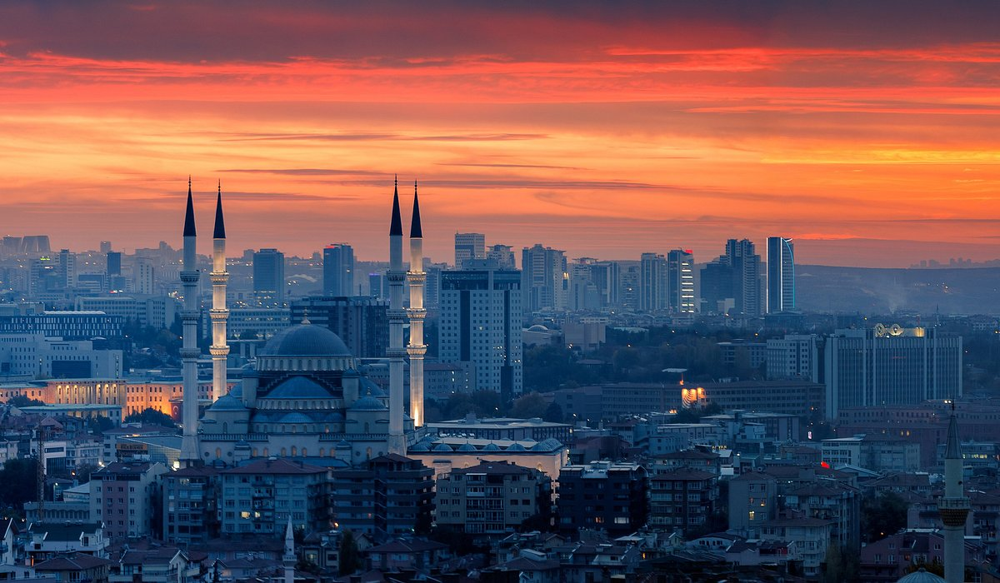
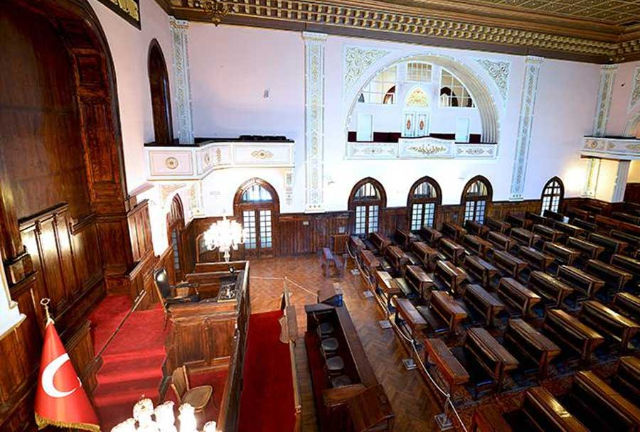
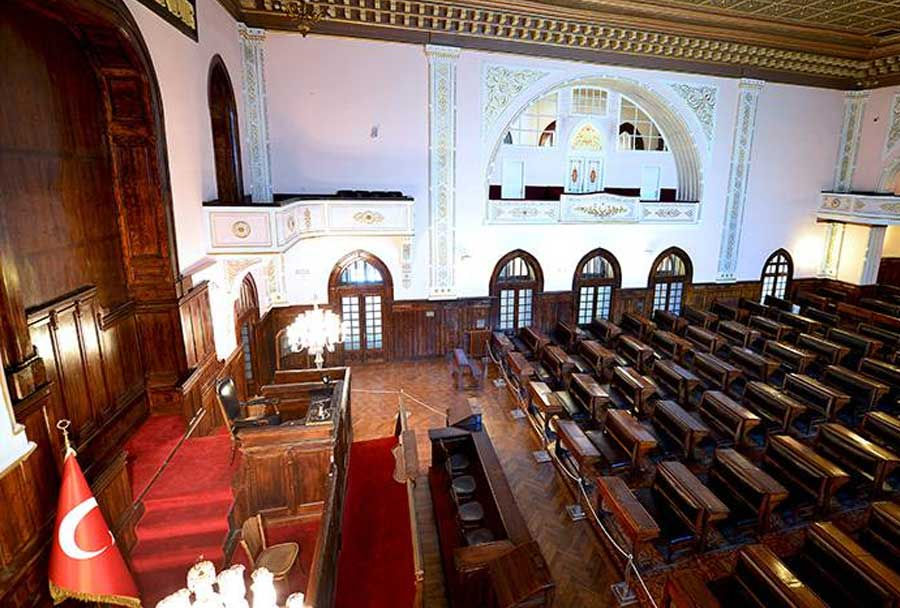

Stad in Turkije
Ankara ligt in Midden-Anatolië en is het hart van Turkije. Na Istanbul in het westen, is Ankara de grootste stad van Turkije. Ankara heeft een betere centrale ligging dan Istanbul. Binnen de muren van Hisar vind je een oude stadskern met een typisch Oosters uiterlijk. Hier kun je kleine winkeltjes vinden. Istanbul is eigenlijk het economisch centrum van Turkije. Maar daartegen heeft Ankara ook een belangrijke positie, namelijk de moderne architectuur. Ankara kent vele parken en een uitgebreid metronetwerk. Je kunt hier overigens veel universiteiten vinden en de Turkse militaire academie. Helaas zijn er geen stranden te vinden in Ankara daarvoor moet je met de bus, auto of metro naar andere plaatsen reizen. Wel zijn er zwembaden te vinden als je toch wilt gaan zwemmen. Tot op de dag vandaag telt Ankara ongeveer 4.000.000 inwoners.Ankara is de hoofdstad van Turkije en wordt soms een beetje overschaduwd door Istanbul, maar deze stad is het bezoeken meer dan waard. Bekijk de déze bezienswaardigheden in Ankara maar eens! Wat is Imvanex en wanneer wordt het voorgeschreven? Imvanex is een vaccin dat wordt gebruikt om volwassenen en adolescenten vanaf de leeftijd van 12 jaar te beschermen tegen pokken. De pokken zijn in 1980 officieel als uitgeroeid verklaard. Het laatste bekende geval van de ziekte was in 1977. Dit vaccin wordt gebruikt wanneer bescherming tegen pokken overeenkomstig officiële aanbevelingen noodzakelijk wordt geacht. Imvanex kan ook worden gebruikt om volwassenen en adolescenten vanaf de leeftijd van 12 jaar te beschermen tegen mpox (vroeger ‘apenpokken’ genoemd) en door het vacciniavirus veroorzaakte ziekte. Imvanex bevat een geattenueerde (verzwakte) vorm van het vacciniavirus dat ‘gemodificeerd vacciniavirus Ankara’ wordt genoemd en dat verwant is met het pokkenvirus en het mpoxvirus.
Klimaat
Ankara is de hoofdstad van Turkije en ligt in het binnenland. Ankara heeft een landklimaat, met het hele jaar vrij weinig neerslag (minder dan 300 mm op jaarbasis), iets koelere winters en warme zomers. 's Nachts koelt het in de zomermaanden verder af dan langs de kustgebieden, vrijwel alle nachten daalt de temperatuur onder de 20 graden. In de winter is nachtvorst in de periode november tot en met maart heel gewoon en van half december tot eind februari kan het ook voorkomen dat de thermometer overdag onder de nul graden blijft. Sneeuwval is in de winter niet ongewoon en de sneeuw kan ook enkele dagen tot enkele weken blijven liggen. In de zomermaanden zijn temperaturen van rond de 30 graden heel normaal en in juli en augustus kan het kwik zelfs tot ver boven de dertig graden oplopen.
Traditioneel eten in Ankara
Çiğ Köfte. Als je in Ankara bent, moet je zeker Çiğ Köfte proberen. Dit traditionele gerecht bestaat uit rauw vlees gemengd met bulgur, kruiden en specerijen. Hoewel het oorspronkelijk met rauw vlees werd bereid, wordt het tegenwoordig vaak gemaakt met bulgur in plaats daarvan. De smaak is pittig en vol van kruiden, en wordt meestal geserveerd met sla, citroen en pide (Turks brood). Mijn favoriete plek om Çiğ Köfte te eten is bij een klein kraampje in de buurt van Kızılay, waar je de beste en meest authentieke smaak kunt proeven. Kumpir Een andere populaire street food optie in Ankara is Kumpir, een gepofte aardappel die gevuld is met verschillende toppings naar keuze. Denk aan kaas, groenten, vlees en sauzen. Het is een heerlijk en voedzaam gerecht dat perfect is voor een snelle hap onderweg. Mijn favoriete plek om Kumpir te eten is bij een kraampje in de buurt van het Kugulu Park, waar je kunt genieten van een prachtig uitzicht terwijl je van je maaltijd geniet. Simit Als je zin hebt in iets lichts en knapperigs, dan is Simit de perfecte keuze. Deze Turkse bagel is bedekt met sesamzaadjes en wordt vaak geserveerd met kaas, olijven en thee. Het is een populaire snack onder de lokale bevolking en wordt vaak gegeten als ontbijt of tussendoortje. Mijn favoriete plek om Simit te eten is bij een kraampje in de buurt van het Ulus-plein, waar je kunt genieten van de levendige sfeer van de stad terwijl je van je snack geniet. Döner Kebab Geen artikel over street food in Ankara is compleet zonder te praten over Döner Kebab. Dit iconische gerecht bestaat uit dun gesneden gegrild vlees, meestal geserveerd in een broodje met salade en saus. Het is een favoriet onder zowel de lokale bevolking als toeristen, en je vindt talloze kraampjes en restaurants die dit heerlijke gerecht aanbieden. Mijn favoriete plek om Döner Kebab te eten is bij een klein restaurant in de buurt van het Kocatepe-moskee, waar je kunt genieten van een smaakvolle en authentieke ervaring. Baklava Na al dat hartige street food, is het tijd voor iets zoets. En wat is er zoeter dan Baklava? Dit heerlijke dessert bestaat uit laagjes filodeeg, gevuld met noten en overgoten met siroop. Het is een ware traktatie voor de smaakpapillen en een must-try wanneer je in Ankara bent. Mijn favoriete plek om Baklava te eten is bij een bakkerij in de buurt van het Atatürk-bos, waar je kunt genieten van verse en smaakvolle Baklava. Al met al is het verkennen van street food in Ankara een onvergetelijke ervaring die je smaakpapillen zal verwennen en je kennis zal laten maken met de rijke culinaire tradities van Turkije. Of je nu op zoek bent naar hartige gerechten of zoete lekkernijen, Ankara heeft voor ieder wat wils. Dus ga eropuit, proef de lokale smaken en geniet van alles wat deze bruisende stad te bieden heeft!
Museums in Ankara
 
